Automate integrates with Global Branching to enable safe, isolated development of automations. This documentation covers how to work with automations on branches, including adding and modifying resources, cross-application compatibility, merge requirements, rebasing, and known limitations.
For general information on Global Branching concepts and workflows, refer to the Global Branching documentation.
To add an automation to a branch:
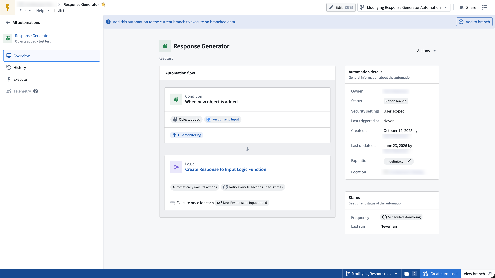
To remove an automation from a branch, use the bottom right sidebar and select Remove from branch. Removing the automation from the branch discards all modifications to the branch and stops all effects from executing.
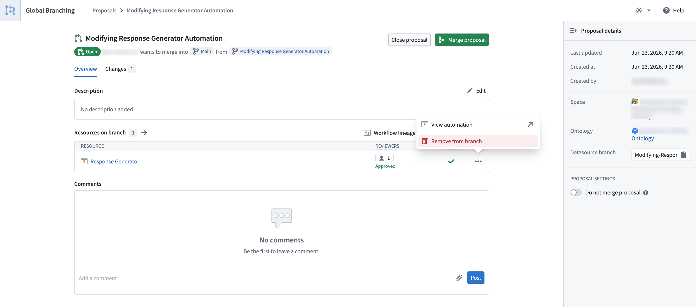
To modify an automation on a branch, make any change and save, just as you would on the main branch.
:::callout{theme="warning"}
Modifying the name and description of an automation on a branch also modifies those values on main.
:::
Not all Automate conditions are currently supported on a branch. When you build an automation on a branch, unsupported conditions are disabled in the condition selector.
The following conditions are supported on a branch:
The following conditions are not currently supported on a branch:
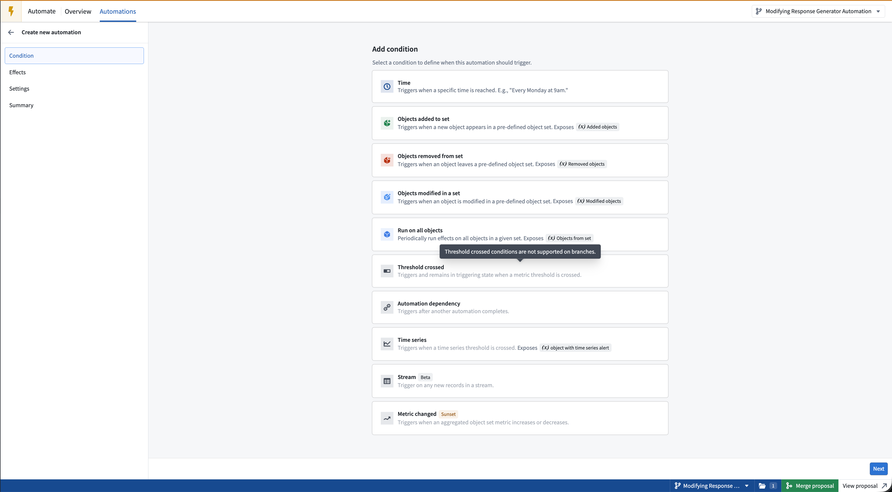
All Automate effects are supported on a branch:
Automations reference resources from across the platform including object types, actions, AIP Logic functions, and Foundry functions. On a branch, an automation references the branched state of these resources:
Branched pre-release version of an AIP Logic or Foundry function.Before an automation can be deployed to main from a branch, the following checks must succeed:
main: Before merging, if changes have been made on the main branch of the automation, rebase those changes on your branch.To guarantee that all edits to an automation go through the branching and review process, you can protect
the main branch of that automation.
To protect the automation main branch, navigate to the resource in the file system and select Branch protection > Protect with project policy. You can also do this from the main automation view in the top right using the View details option.
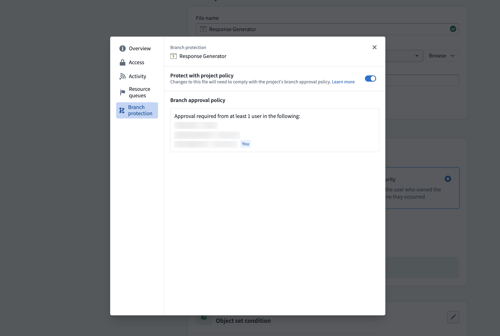
When the main branch of an automation is protected, edits to main require users to go through a global branch on save.
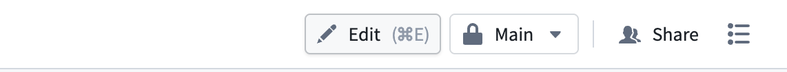
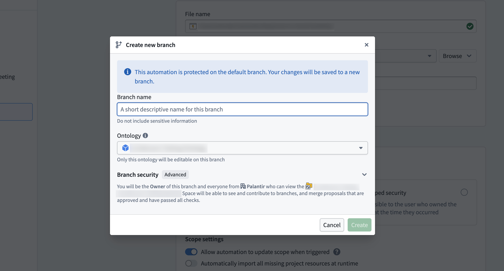
Once a proposal is created, reviewers can be added to the automation in the Global Branching application or via the Approvals banner in Automate. Users added as reviewers receive an email requesting their review with a link to the proposal.
Select Manage to add reviewers and view the approval policies that must be satisfied before the proposal can be merged.
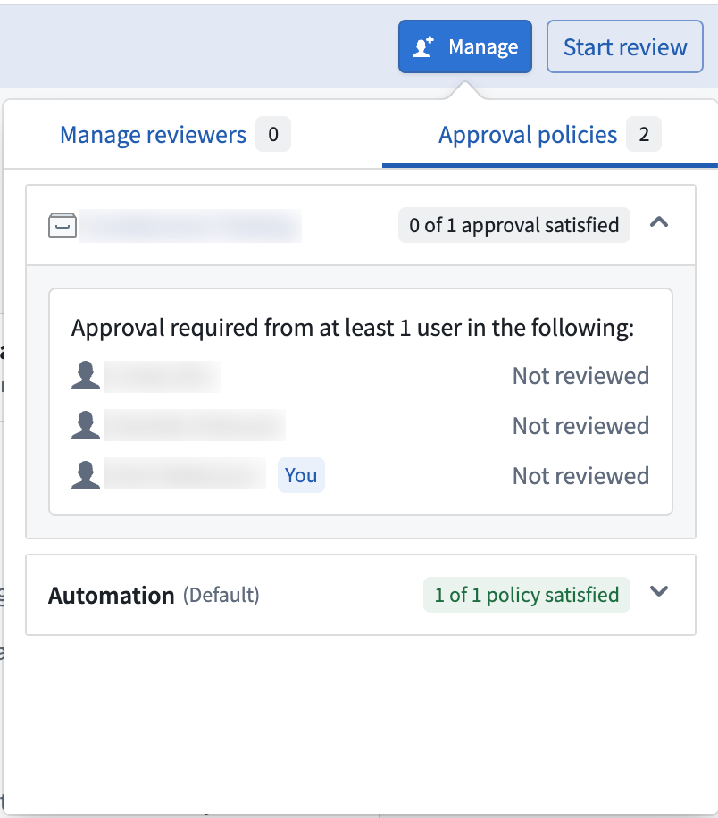
When an automation has changes awaiting review, a banner at the top of the page displays the number of approvals satisfied.
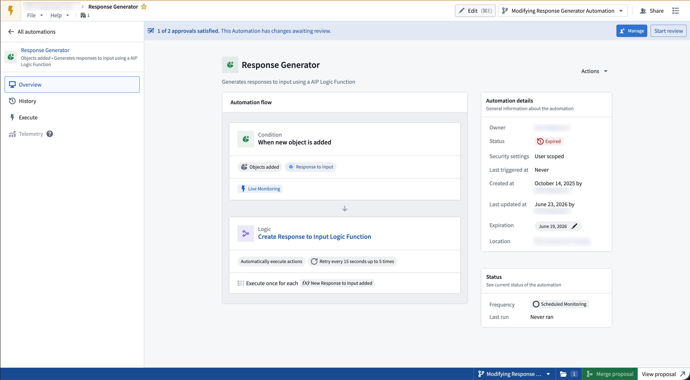
From there, reviewers can open the review dialog by selecting Start review to view a side-by-side comparison of main vs. the branch changes. They can then approve or reject the changes by selecting the Your review option.
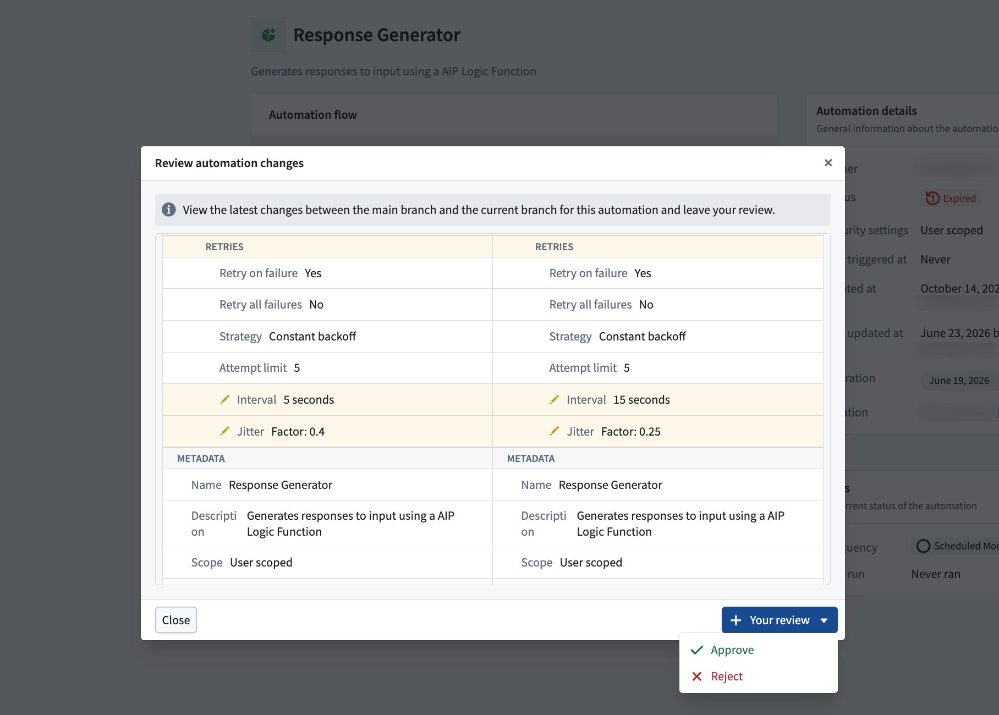
Once all required approvals are satisfied, the changes are approved and the proposal can be merged for this resource.
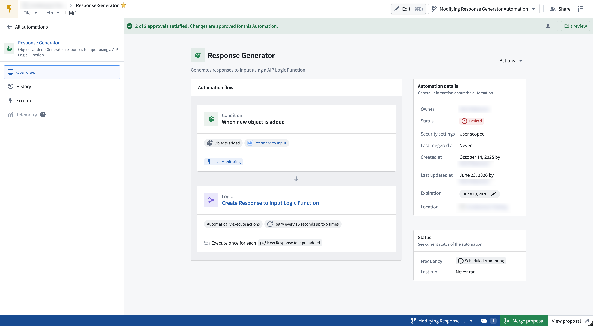
Rebasing is required when main has been modified since your branch was created or last rebased.
A banner appears at the top of the automation prompting you to rebase your branch with the latest changes.
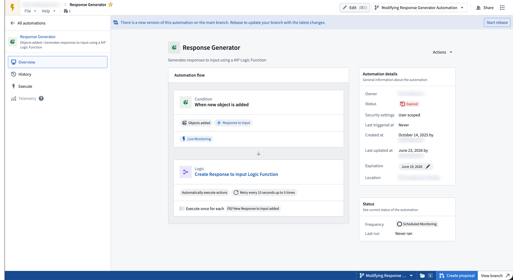
To rebase your branch, select Start rebase in the banner. The Rebase automation dialog opens, showing a side-by-side comparison of the main branch and current branch versions. Choose whether to keep the Main branch or Current branch version, then select Finish rebase to apply your selections.
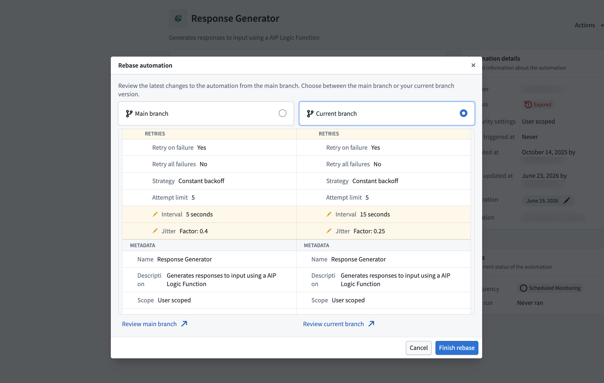
:::callout{theme="neutral"} If both rebasing and approval are required, the rebase dialog is shown first and must be resolved before reviewers can review the changes. :::
main or the changes on your branch. There is currently no way to resolve diffs at a finer granularity.